Embodied Shopping
Making shopping a learning experience for kids
A grocery toolkit to foster financial responsibility, nutritional awareness, and enhanced decision-making abilities among children.
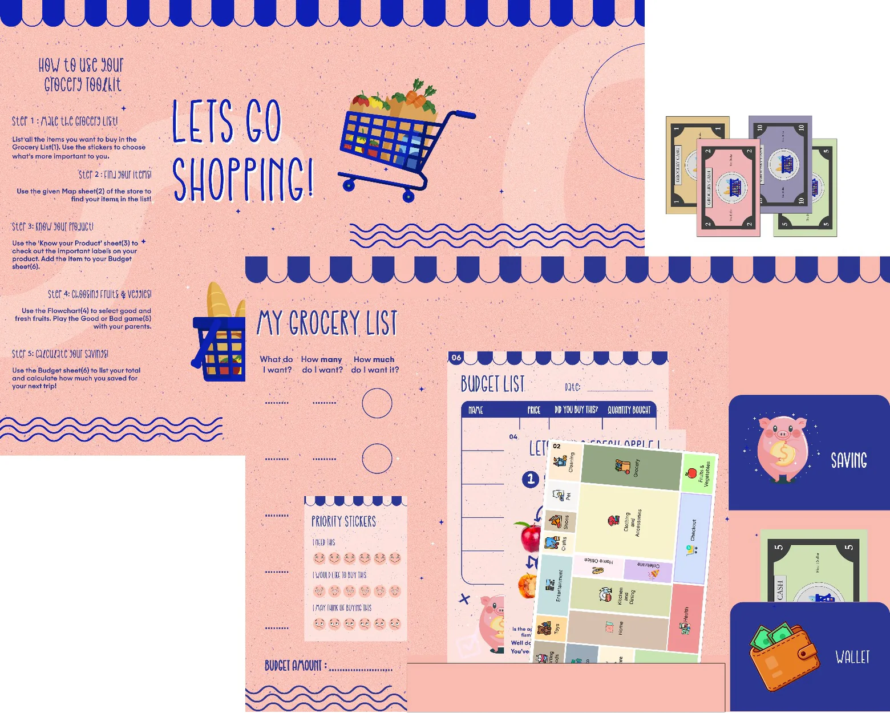
My Role
UX Researcher
Duration
8 weeks
Design Tools
1. Figma
2. Photoshop
R&D Methods
1. Observations
2. Physical Prototype
3. Usability Testing
We went observing at Walmart
As a part of our course project, we were tasked with optimizing the grocery shopping experience. We started off by visiting Walmart and observing shopping behaviors.
We observed:
customers (e.g. families, elderly, students' groups, individual shoppers)
employees (e.g. cashiers, warehouse workers)
store locations (e.g. check-out, section layouts, product placements)
Kids influence shopping behaviors
After reflecting on our observations and brainstorming amongst each other, we decided to center our solution around kids who go for shopping with their parents because:
Children influence shopping decisions; they hold a purchase power within the family.
Western families are categorized as negotiation families where children have a greater sense of autonomy.
Tech-solutions are not suitable for children because they tend to interact more with their surroundings during shopping.
We went observing children at Walmart
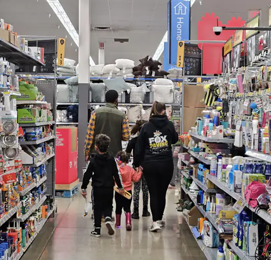
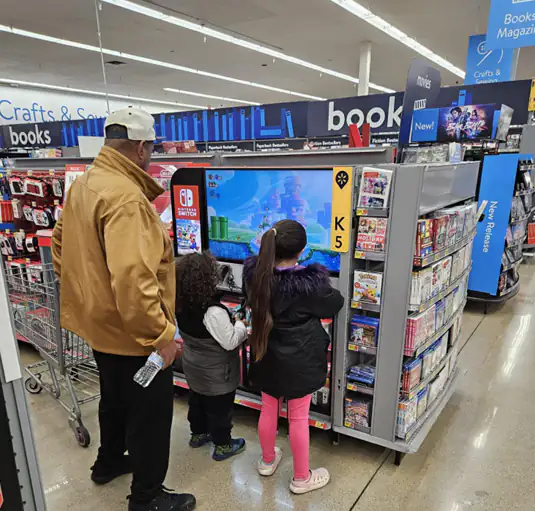
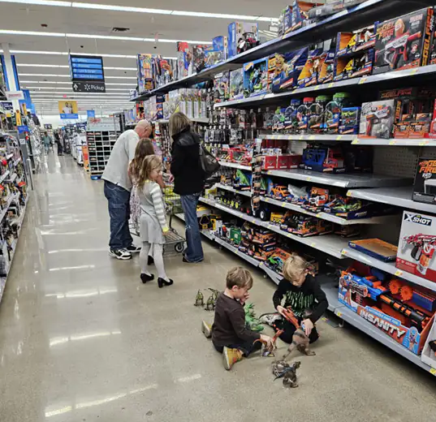
Having narrowed down our user base, we went to Walmart again. This time, we shadowed around 30 families with kids to gather insights.
We found that:
Younger children need to be distracted. They throw tantrums while making demands to buy products.
Children aged 4-7 are energetic. They are eager to observe/ touch items but may become annoying at times too.
Children aged 7-12 help their parents with shopping. They discuss what to buy, fetch items, search for products, and read information on them.
Shopping can be educational for 7–12 year-olds
We noticed grocery shopping could be a valuable source of cognitive development among children aged between 7-12 years since they take interest in shopping and actively participate in the experience with their parents.
To get a better sense of our user needs and pain points, we developed a user persona of 7-12 year olds based off our observations and field interviews with children and families.
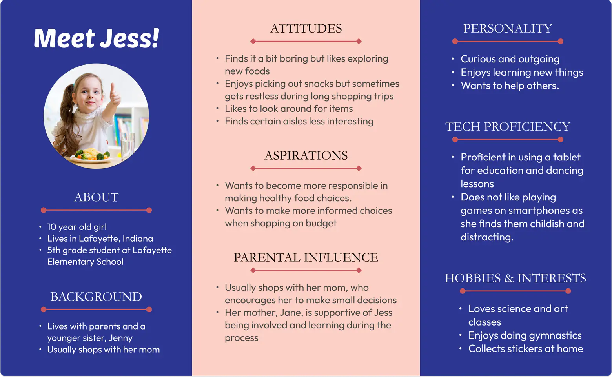
After having an understanding of our target user, we decided to build a toolkit for the 7-12 year olds which they can use while shopping. We performed Crazy-4 ideation to identify core cognitive development competencies that could be incorporated in our grocery toolkit. We chose to focus on:
Financial responsibility
Nutritional awareness
Decision-making
We started sketching ideas for grocery toolkit
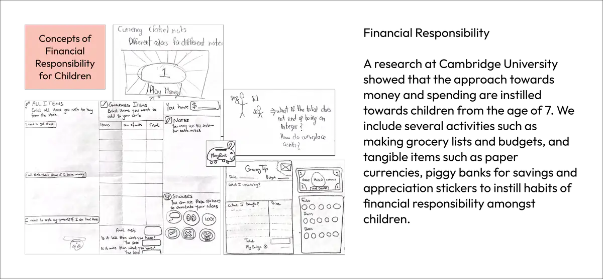
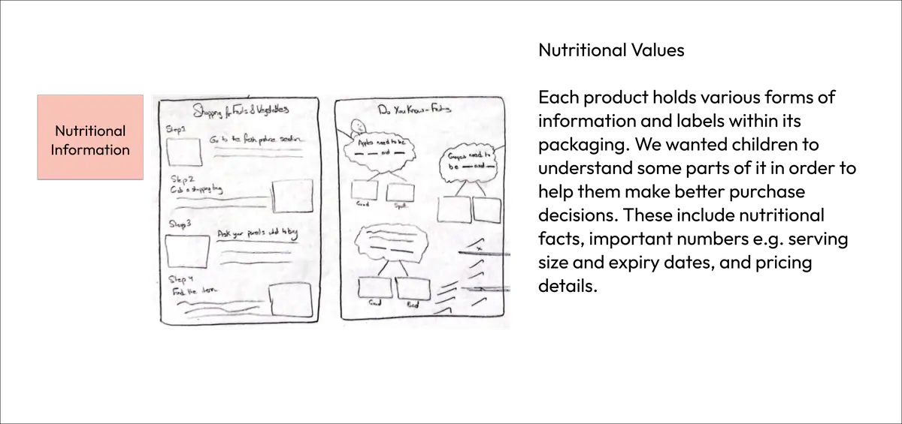
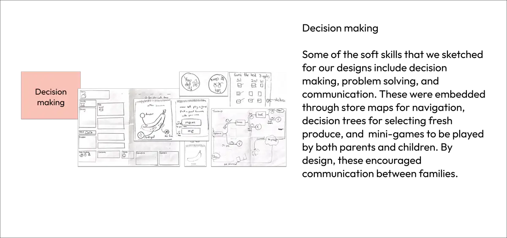
Step by step guide to using the grocery toolkit
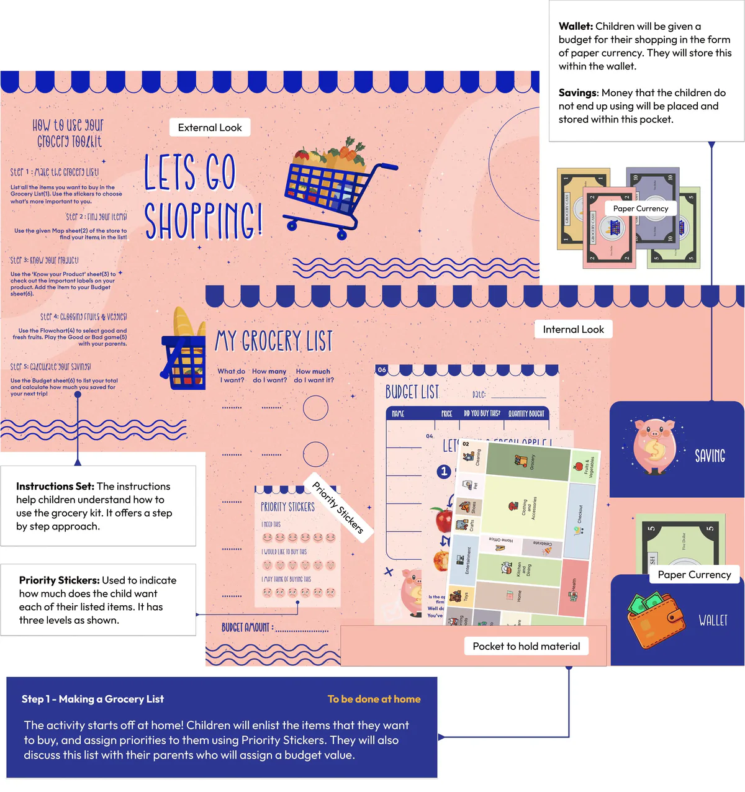
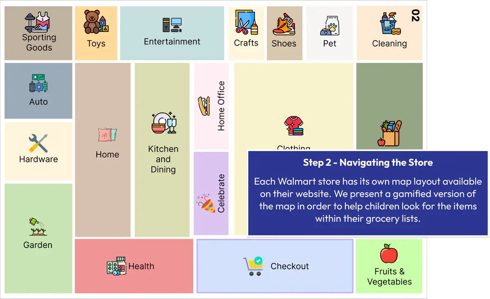
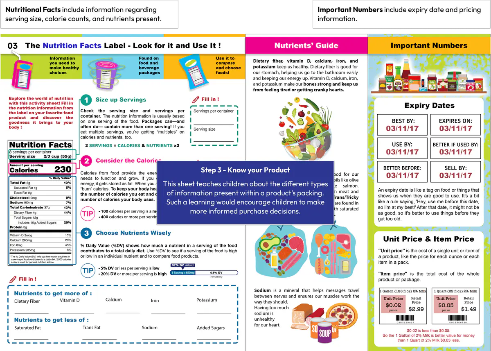
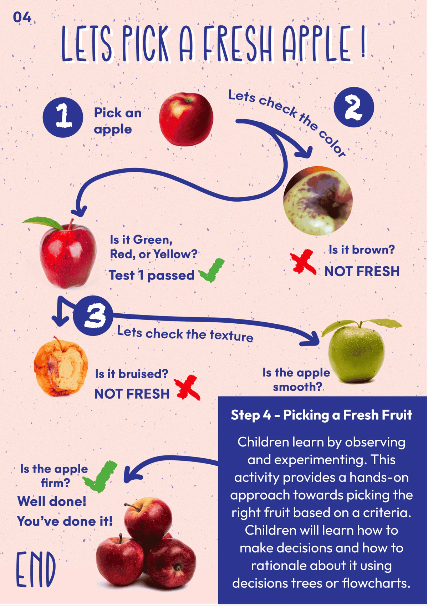
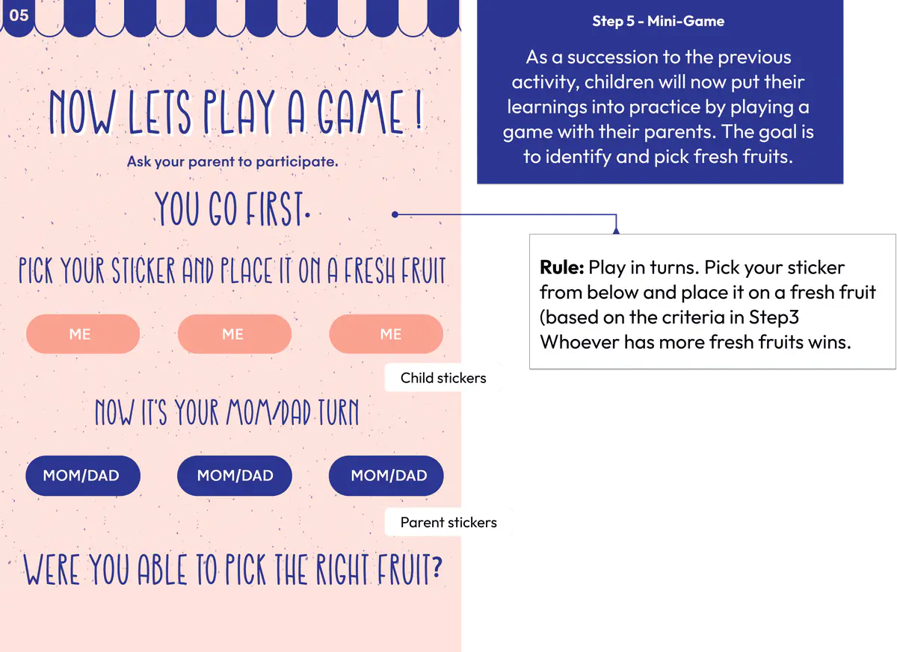
We asked kids how they felt about the kit
We approached 2 children with families at Walmart and shadowed them while they used our grocery toolkit. We found that:
The store layout map (Step 2) was not comprehensive and the 'Know your product' sheet (Step 3) was too text-heavy for skimming.
The 'Know your product' (Step 3) sparked a conversation between parents and the child about nutritional value of products.
The gamified decision tree (Step 4) helped children identify fresh produce items.
After the qualitative interview, we asked participants to provide feedback about their experience on the evaluation sheet.
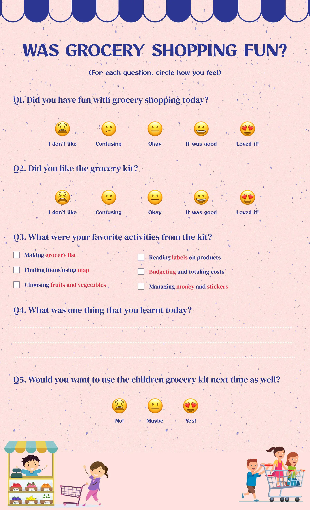
Reflection
This was my first project where I extensively performed ethnographic observations and conducted shadowing exercises. This was also the first time I worked with children. The design choices in the toolkit's layout were carefully thought-out. For instance, we incorporated avatars and playful interactions to make the toolkit look fun to the kids. Moreover, we used emojis to signify the likert scale ratings, which made the questions more understandable for the children.
The physical prototype of the toolkit was designed in such a way that it could carry the toolkit components in a compact format. To do this, we incorporated pockets inside the folds.